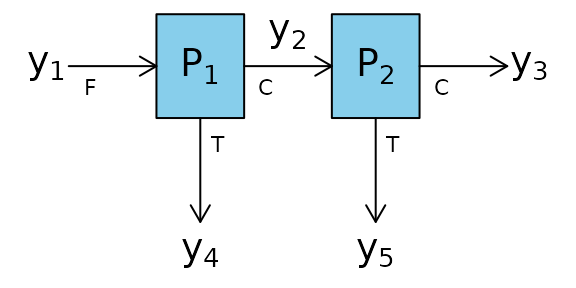
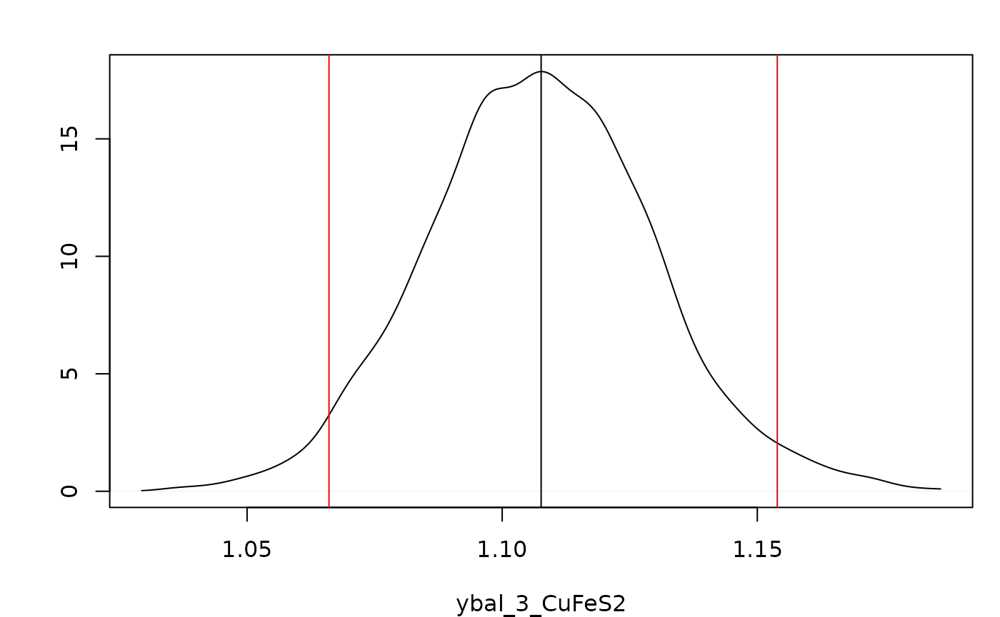
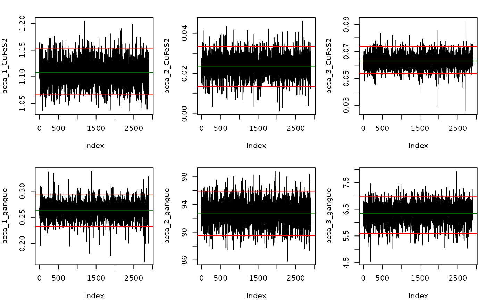

vignettes/Two_Node_Process.Rmd
Two_Node_Process.Rmdlibrary(BayesMassBal)
The function BMB is used with a two node process and simulated data.

The constraints around these process nodes are:
\[\begin{align} y_1 &= y_2 +y_4\\ y_2 &= y_3 +y_5 \end{align}\]
Therefore the matrix of constraints, C is:
C <- matrix(c(1,-1,0,-1,0,0,1,-1,0,-1), nrow = 2, ncol = 5, byrow = TRUE) C #> [,1] [,2] [,3] [,4] [,5] #> [1,] 1 -1 0 -1 0 #> [2,] 0 1 -1 0 -1
The constrainProcess function in the BayesMassBal package is used to generate an X matrix based on C that will later be used with the BMB function.
X <- constrainProcess(C = C) X #> [,1] [,2] [,3] #> [1,] 1 1 1 #> [2,] 1 0 1 #> [3,] 1 0 0 #> [4,] 0 1 0 #> [5,] 0 0 1
The previously simulated data is loaded from a .csv file using the importObservations() function. The local location of the the file imported below can be found by typing system.file("extdata", "twonode_example.csv",package = "BayesMassBal"). View the document in Excel to see how your data should be formatted for import. Note: it is not required that the entries into the *.csv file are separated by ";".
y <- importObservations(file = system.file("extdata", "twonode_example.csv", package = "BayesMassBal"), header = TRUE, csv.params = list(sep = ";"))
Then, the BMB function is used to generate the distribution of constrained masses from the data with cov.structure = "indep".
indep.samples <- BMB(X = X, y = y, cov.structure = "indep", BTE = c(100,3000,1), lml = TRUE, verb = 0)
The output of BMB is a BayesMassBal object. Special instructions are designated when feeding a BayesMassBal object to the plot() function. Adding the argument layout = "dens" and indicating the mass balanced flow rate for CuFeS2 at \(y_3\) should be plotted using a list supplied to sample.params, the desired distribution can be plotted with its 95% Highest Posterior Density Interval.
plot(indep.samples,sample.params = list(ybal = list(CuFeS2 = 3)), layout = "dens",hdi.params = c(1,0.95))

It is also possible to generate trace plots to inspect convergence of the Gibbs sampler. Here are trace plots for \(\beta\)
plot(indep.samples,sample.params = list(beta = list(CuFeS2 = 1:3, gangue = 1:3)),layout = "trace",hdi.params = c(1,0.95))

A quantitative diagnostics for convergence and autocorrelation are available as part of the output from BMB:
indep.samples$diagnostics #> $beta #> $beta$CuFeS2 #> index cd ess #> 1 1 1.0004384 2591.250 #> 2 2 0.6080546 3997.350 #> 3 3 -0.2426626 2387.926 #> #> $beta$gangue #> index cd ess #> 1 1 -1.3829806 2900.000 #> 2 2 -1.4424896 2694.149 #> 3 3 -0.8815153 1884.461 #> #> #> $Sig #> $Sig$CuFeS2 #> index cd ess #> 1 1 2.428180633 2900.000 #> 2 2 -0.567878027 2712.387 #> 3 3 0.002792374 2366.858 #> 4 4 2.043830035 2516.000 #> 5 5 0.619024295 2412.163 #> #> $Sig$gangue #> index cd ess #> 1 1 0.5510609 2546.447 #> 2 2 0.4539651 2339.974 #> 3 3 0.9439753 2473.625 #> 4 4 -1.4181121 2645.274 #> 5 5 0.6730748 2216.242
The model with independent variances may not be the best fitting model. Models specifying covariance between sample locations for a single component, and covariance between components at a single location are fit.
component.samples <- BMB(X = X, y = y, cov.structure = "component", BTE = c(100,3000,1), lml = TRUE, verb = 0)
location.samples <- BMB(X = X, y = y, cov.structure = "location", BTE = c(100,3000,1), lml = TRUE, verb = 0)
Computing \(\log(\mathrm{Bayes Factor})\) for \(BF = p(y|\texttt{indep})/p(y|\texttt{component})\):
indep.samples$lml - component.samples$lml #> [1] -138.6446
Then comparing \(p(y|\texttt{component})\) to \(p(y|\texttt{location})\)
component.samples$lml - location.samples$lml #> [1] 0.8341701
Shows there is little difference between the models where cov.structure = "location" and cov.structure = "component", but both of these models better explain the data than cov.structure = "indep".
The main effect of a variable independent of the process can be calculated by supplying a function, fn that takes the arguments of mass balanced flow rates ybal, and the random independent and uniformly distributed variables x. Information can be gained on the main effect of a particular element of x, xj, on fn using the mainEff function. Output from mainEff includes information on the distribution of \(E_x\lbrack f(x,y_{\mathrm{bal}})|x_j \rbrack\).
fn_example <- function(X,ybal){ cu.frac <- 63.546/183.5 feed.mass <- ybal$CuFeS2[1] + ybal$gangue[1] # Concentrate mass per ton feed con.mass <- (ybal$CuFeS2[3] + ybal$gangue[3])/feed.mass # Copper mass per ton feed cu.mass <- (ybal$CuFeS2[3]*cu.frac)/feed.mass gam <- c(-1,-1/feed.mass,cu.mass,-con.mass,-cu.mass,-con.mass) f <- X %*% gam return(f) } rangex <- matrix(c(4.00 ,6.25,1125,1875,3880,9080,20,60,96,208,20.0,62.5), ncol = 6, nrow = 2) mE_example <- mainEff(indep.samples, fn = "fn_example",rangex = rangex,xj = 3, N = 25, res = 25)
A plot of the output can be made. To get lines that are better connected, change increase N in the mainEff function.
m.sens<- mE_example$fn.out[2,] hpd.sens <- mE_example$fn.out[c(1,3),] row.names(hpd.sens) <- c("upper", "lower") g.plot <- mE_example$g/2000 y.lim <- range(hpd.sens) lzero.bound <- apply(hpd.sens,1,function(X){which(X <= 0)}) lzero.mean <- which(m.sens <= 0) main.grid <- pretty(g.plot) minor.grid <- pretty(g.plot,25) minor.grid <- minor.grid[-which(minor.grid %in% main.grid)] y.main <- pretty(hpd.sens) opar <- par(no.readonly =TRUE) par(mar = c(4.2,4,1,1)) plot(g.plot,m.sens, type = "n", xlim = range(g.plot), ylim = y.lim, ylab = "Net Revenue ($/ton Feed)", xlab= "Cu Price ($/lb)") abline(v = main.grid, lty = 6, col = "grey", lwd = 1) abline(v = minor.grid, lty =3, col = "grey", lwd = 0.75) abline(h = 0, col = "red", lwd = 1, lty = 6) lines(g.plot[lzero.mean],m.sens[lzero.mean],col = "red", lwd =2) lines(g.plot[-lzero.mean[-length(lzero.mean)]],m.sens[-lzero.mean[-length(lzero.mean)]],col = "darkgreen", lwd =2) lines(g.plot[lzero.bound$lower],hpd.sens[2,][lzero.bound$lower], lty = 5, lwd = 2, col = "red") lines(g.plot[-lzero.bound$lower],hpd.sens[2,][-lzero.bound$lower], lty = 5, lwd = 2, col = "darkgreen") lines(g.plot[lzero.bound$upper],hpd.sens[1,][lzero.bound$upper], lty = 5, lwd = 2, col = "red") lines(g.plot[-lzero.bound$upper],hpd.sens[1,][-lzero.bound$upper], lty = 5, lwd = 2, col= "darkgreen") legend("topleft", legend = c("Expected Main Effect", "95% Bounds", "Net Revenue < $0", "Net Revenue > $0"), col = c("black","black","red", "darkgreen"), lty = c(1,6,1,1), lwd = c(2,2,2,2), bg = "white")
par(opar)